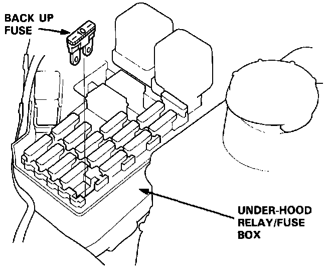

Without Scan Tool

A/T Control Reset Procedure
1. Turn the ignition switch off.
2. Remove the No. 39 BACK UP fuse (10 A) from the under-hood relay/fuse box for 10 seconds to reset the A/T control unit.
NOTE: Disconnecting the No. 39 BACK UP fuse also cancels the radio preset stations and the clock setting. Make note of the radio presets before removing the fuse so you reset them.
Final Procedure
NOTE: This procedure must be done after any troubleshooting.
1. Remove the Jumper Wire from the Service Check Connector.
2. Reset the A/T control unit.
3. Set the radio preset stations and clock setting.